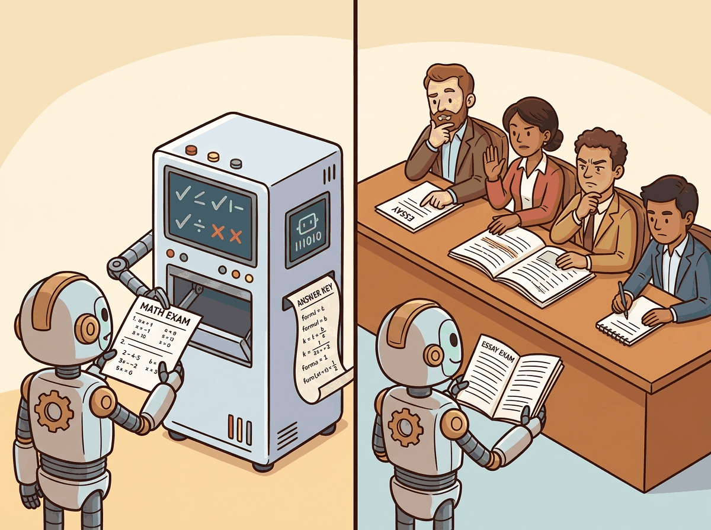

"If the answer can be checked by a compiler or a proof assistant, why bother asking a human? Let the math grade itself."
Reward, Compiler-Trusting AI Agent
RLVR removes humans from the reward loop entirely by using objectively verifiable correctness signals. For domains like mathematics, programming, and formal proofs, the correctness of an answer can be checked automatically: a math solution is either right or wrong, code either passes tests or fails, and a proof either verifies or does not. RLVR exploits this property to train reasoning models at massive scale without any human preference data. This paradigm powered DeepSeek-R1 and has sparked an open ecosystem of reasoning models that achieve frontier-level performance on mathematical and coding benchmarks. The test-time compute scaling paradigm from Section 8.3 provides the broader context for why reasoning models are so valuable.
Prerequisites
Before starting, make sure you are familiar with alignment fundamentals as covered in Section 20.1: RLHF: Reinforcement Learning from Human Feedback.
RLVR works because it has access to an objective correctness oracle: a math checker, a test suite, or a proof verifier. Some teams see the impressive reasoning gains from RLVR and attempt to apply the same approach to open-ended tasks (summarization, creative writing, customer service) by constructing proxy verification functions. These proxy verifiers are just reward models by another name, and they inherit all the reward hacking problems that RLVR was designed to avoid. If your "verifier" is a heuristic or another LLM judging quality, you are doing RLHF with extra steps, not RLVR. Reserve RLVR for domains where correctness is truly binary and machine-checkable.
17.4.1 The Verifiable Reward Paradigm
Standard RLHF relies on a learned reward model trained on human preferences. This reward model is imperfect: it can be gamed, it introduces noise, and it caps the alignment quality at the level of annotator agreement. For domains where correctness is objectively verifiable, we can bypass the reward model entirely and use the ground truth as the reward signal.
The key insight behind RLVR is simple: if you can write a function that checks whether an answer is correct, you have a perfect reward signal. No reward model training, no human annotation, no preference noise. The reward is binary (correct or incorrect) or graded (partially correct), and it is always accurate. Figure 20.4.1 contrasts the RLHF and RLVR reward signal paths.
RLVR flips the hardest problem in alignment on its head. In RLHF, the reward signal is expensive, noisy, and biased (human annotators disagree). In RLVR, the reward signal is free, exact, and infinitely scalable. The catch is that RLVR only works for domains where correctness can be verified automatically: math (check the answer), code (run the tests), formal logic (verify the proof). For open-ended tasks like creative writing or ethical reasoning, there is no verification oracle, so RLHF and DPO remain necessary.
Think of RLVR as training with an auto-graded math exam instead of essay grading by humans. The model generates a solution (the exam answer), and a verifier checks whether the final answer matches the known correct answer. No human preferences are needed: the reward is binary (correct or incorrect) and objective. This works beautifully for math, code, and logic puzzles where correctness is verifiable, but it cannot directly train for subjective qualities like helpfulness or tone.

17.4.1.1 Types of Verifiable Rewards
| Domain | Verification Method | Reward Type | Dataset Examples |
|---|---|---|---|
| Mathematics | Compare to known answer; symbolic checking | Binary (correct/wrong) | GSM8K, MATH, AIME |
| Code generation | Execute against test suite | Graded (pass@k tests) | HumanEval, MBPP, SWE-bench |
| Formal proofs | Lean/Coq/Isabelle type checker | Binary (verifies/fails) | miniF2F, ProofNet |
| Logic puzzles | Constraint satisfaction check | Binary (satisfies/violates) | FOLIO, ProntoQA |
| Format compliance | Regex, JSON schema validation | Binary (valid/invalid) | Custom structured output tasks |
The following code demonstrates verifiable reward functions for each of these domains. Code Fragment 20.4.2 implements binary math checking, graded code evaluation via test suites, and formal proof verification using the Lean 4 type checker.
# Verifiable reward functions for different domains
import subprocess
import json
import re
from typing import Optional
def math_reward(
model_answer: str,
ground_truth: str,
tolerance: float = 1e-6,
) -> float:
"""Binary reward for math: 1.0 if correct, 0.0 otherwise."""
# Extract numerical answer from model output
extracted = extract_final_answer(model_answer)
if extracted is None:
return 0.0
try:
model_val = float(extracted)
truth_val = float(ground_truth)
return 1.0 if abs(model_val - truth_val) < tolerance else 0.0
except ValueError:
# String comparison for symbolic answers
return 1.0 if extracted.strip() == ground_truth.strip() else 0.0
def code_reward(
generated_code: str,
test_cases: list,
timeout: int = 10,
) -> float:
"""Graded reward for code: fraction of tests passed."""
passed = 0
for test in test_cases:
full_code = generated_code + "\n" + test["test_code"]
try:
result = subprocess.run(
["python", "-c", full_code],
capture_output=True,
timeout=timeout,
text=True,
)
if result.returncode == 0:
passed += 1
except subprocess.TimeoutExpired:
continue
return passed / len(test_cases) if test_cases else 0.0
def proof_reward(
proof_text: str,
theorem_statement: str,
lean_project_path: str,
) -> float:
"""Binary reward for Lean 4 proofs."""
# Write proof to a temporary Lean file
lean_code = f"{theorem_statement}\n{proof_text}"
with open(f"{lean_project_path}/Temp.lean", "w") as f:
f.write(lean_code)
result = subprocess.run(
["lake", "build", "Temp"],
capture_output=True,
cwd=lean_project_path,
timeout=60,
)
return 1.0 if result.returncode == 0 else 0.0
def extract_final_answer(text: str) -> Optional[str]:
"""Extract boxed answer from math response."""
# Look for \boxed{...} or "The answer is ..."
boxed = re.findall(r"\\boxed\{([^}]+)\}", text)
if boxed:
return boxed[-1]
answer_pattern = re.findall(
r"(?:the answer is|therefore|thus)[:\s]+([^\n.]+)",
text, re.IGNORECASE,
)
if answer_pattern:
return answer_pattern[-1].strip()
return NoneLet me think about this carefully... Let the distance between the two cities be d km. Time for A to B: d/60 hours Time for B to A: d/40 hours Total distance: 2d Total time: d/60 + d/40 = d(2+3)/120 = 5d/120 = d/24 Average speed: 2d / (d/24) = 48 km/h The average speed for the round trip is **48 km/h**.
Code Fragment 20.4.3 shows how GRPO combines verifiable rewards with group-level normalization for math reasoning training.
# GRPO with Verifiable Rewards for Math Reasoning
import torch
from typing import List, Callable
def grpo_math_training_step(
policy_model,
ref_model,
tokenizer,
math_problems: List[dict], # {"prompt": ..., "answer": ...}
group_size: int = 16,
beta: float = 0.04,
clip_range: float = 0.2,
):
"""
One GRPO training step using verifiable math rewards.
For each problem, generate group_size solutions,
check correctness, normalize rewards within the group,
and compute the policy gradient.
"""
total_loss = 0.0
total_correct = 0
total_generated = 0
for problem in math_problems:
prompt = problem["prompt"]
ground_truth = problem["answer"]
input_ids = tokenizer.encode(prompt, return_tensors="pt")
# Generate a group of solutions
solutions = []
for _ in range(group_size):
output = policy_model.generate(
input_ids,
max_new_tokens=1024,
do_sample=True,
temperature=0.7,
top_p=0.95,
)
solutions.append(output[0])
# Compute verifiable rewards (binary: correct or not)
rewards = torch.tensor([
math_reward(tokenizer.decode(s), ground_truth)
for s in solutions
])
total_correct += rewards.sum().item()
total_generated += group_size
# Skip if all correct or all wrong (no learning signal)
if rewards.sum() == 0 or rewards.sum() == group_size:
continue
# Group normalization (GRPO core idea)
advantages = (rewards - rewards.mean()) / (rewards.std() + 1e-8)
# Compute policy gradient for each solution
for solution, advantage in zip(solutions, advantages):
policy_logprobs = compute_logprobs(
policy_model, input_ids, solution
)
with torch.no_grad():
ref_logprobs = compute_logprobs(
ref_model, input_ids, solution
)
# PPO-style clipped objective
ratio = torch.exp(policy_logprobs - ref_logprobs)
surr1 = ratio * advantage
surr2 = torch.clamp(
ratio, 1 - clip_range, 1 + clip_range
) * advantage
policy_loss = -torch.min(surr1, surr2).mean()
# KL penalty
kl = (ref_logprobs - policy_logprobs).mean()
total_loss += policy_loss + beta * kl
accuracy = total_correct / total_generated if total_generated > 0 else 0
return total_loss / len(math_problems), accuracyCode Fragment 20.4.4 demonstrates the full four-stage DeepSeek-R1 style RLVR training pipeline.
from datasets import load_dataset
# Simplified DeepSeek-R1 style training pipeline
from dataclasses import dataclass
from typing import List, Dict
import json
@dataclass
class RLVRPipelineConfig:
"""Configuration for a full RLVR training pipeline."""
base_model: str = "deepseek-ai/DeepSeek-V3-Base"
cold_start_data: str = "path/to/reasoning_examples.json"
math_dataset: str = "hendrycks/MATH"
code_dataset: str = "openai/humaneval"
# GRPO hyperparameters
group_size: int = 16
beta: float = 0.04
clip_range: float = 0.2
learning_rate: float = 1e-6
# Training schedule
cold_start_epochs: int = 2
rl_steps: int = 10000
rejection_sampling_n: int = 64
def run_rlvr_pipeline(config: RLVRPipelineConfig):
"""Run the full RLVR pipeline (simplified)."""
# Stage 1: Cold-start SFT
print("Stage 1: Cold-start SFT on reasoning examples")
cold_start_data = load_json(config.cold_start_data)
model = sft_train(
config.base_model,
cold_start_data,
epochs=config.cold_start_epochs,
)
# Stage 2: RLVR with GRPO
print("Stage 2: RLVR training with verifiable rewards")
math_problems = load_dataset(config.math_dataset)
code_problems = load_dataset(config.code_dataset)
for step in range(config.rl_steps):
# Sample a batch of problems (mix of math and code)
batch = sample_mixed_batch(math_problems, code_problems)
# GRPO step with verifiable rewards
loss, accuracy = grpo_math_training_step(
policy_model=model,
ref_model=ref_model,
tokenizer=tokenizer,
math_problems=batch,
group_size=config.group_size,
beta=config.beta,
)
if step % 100 == 0:
print(f" Step {step}: loss={loss:.4f}, acc={accuracy:.3f}")
# Stage 3: Rejection sampling + SFT
print("Stage 3: Rejection sampling on diverse prompts")
diverse_prompts = load_diverse_prompts()
best_outputs = []
for prompt in diverse_prompts:
candidates = [
model.generate(prompt) for _ in range(config.rejection_sampling_n)
]
# Score and keep the best
scored = [(c, score_response(c)) for c in candidates]
best = max(scored, key=lambda x: x[1])
best_outputs.append({"prompt": prompt, "response": best[0]})
model = sft_train(model, best_outputs, epochs=1)
# Stage 4: Final alignment RL
print("Stage 4: General alignment with helpfulness/safety rewards")
# Mix verifiable rewards with general preference rewards
model = final_alignment_rl(model)
return modelVerifiable rewards bypass the fundamental limitation of human preference data. In standard RLHF, the quality ceiling is the reward model, which is only as good as the human annotations it was trained on. For math and code, RLVR replaces this noisy human signal with a perfect one: the answer is either correct or incorrect, verifiable by a calculator or test suite. This is why DeepSeek-R1 achieved such remarkable reasoning gains; it could train on millions of verifiable examples without any human annotation bottleneck. The open research question is how to extend verifiable rewards to domains like creative writing, ethical reasoning, and open-ended problem-solving where "correct" has no formal definition.
17.4.4 Extensions Beyond Math and Code
While RLVR has been most successful in mathematics and coding, researchers are actively exploring extensions to other domains. The key challenge is constructing reliable verifiers for domains where correctness is less clearly defined.
Extending RLVR beyond math and code is challenging because most real-world tasks lack clean verifiable signals. A customer service response cannot be automatically graded as "correct" or "incorrect" in the same way a math solution can. Hybrid approaches that combine verifiable rewards for structured components (factual claims, format compliance) with learned rewards for subjective quality are a promising research direction.
| Domain | Verification Approach | Feasibility | Challenge |
|---|---|---|---|
| Fact-checking | Cross-reference with knowledge base | Medium | Knowledge base completeness |
| Translation | Round-trip translation consistency | Medium | Many valid translations exist |
| Structured output | Schema validation (JSON, XML) | High | Format correctness is not content correctness |
| Tool use | Execute tool call, check result | High | Side effects, environment setup |
| Scientific reasoning | Dimensional analysis, unit checking | Medium | Many steps resist automation |
17.4.5 The Open Reasoning Ecosystem
DeepSeek-R1's success with RLVR sparked rapid reproduction efforts across the open-source community. Several projects have demonstrated that the core approach can be replicated at smaller scales with impressive results. Code Fragment 20.4.3 demonstrates inference with an open reasoning model that exposes its chain-of-thought tokens.
# Using open reasoning models for inference
from transformers import AutoModelForCausalLM, AutoTokenizer
# Load an open reasoning model
model_name = "Qwen/QwQ-32B" # Open reasoning model
tokenizer = AutoTokenizer.from_pretrained(model_name)
model = AutoModelForCausalLM.from_pretrained(
model_name, torch_dtype="bfloat16", device_map="auto"
)
# Reasoning models produce extended thinking chains
prompt = """Solve this step by step:
A train travels from City A to City B at 60 km/h. The return trip
is made at 40 km/h. What is the average speed for the round trip?"""
inputs = tokenizer(prompt, return_tensors="pt").to(model.device)
outputs = model.generate(
**inputs,
max_new_tokens=2048,
temperature=0.6,
top_p=0.95,
)
response = tokenizer.decode(outputs[0], skip_special_tokens=True)
print(response)
# The model will produce a detailed reasoning chain:
# "Let me think about this carefully...
# Let the distance be d km.
# Time for A to B: d/60 hours
# Time for B to A: d/40 hours
# Total distance: 2d
# Total time: d/60 + d/40 = d(2+3)/120 = 5d/120 = d/24
# Average speed: 2d / (d/24) = 48 km/h
# Wait, let me verify: ..."The open reasoning ecosystem demonstrates a remarkable pattern: once a training recipe is published, the community can reproduce and extend it rapidly. Sky-T1 (from NovaSky) replicated core R1 results in under $500 of compute. Open-source reasoning models now match or exceed GPT-4o on mathematical reasoning benchmarks, showing that RLVR combined with sufficient base model quality and training data can achieve frontier performance without proprietary infrastructure.
17.4.5.1 Open Reasoning Models Comparison
| Model | Base Size | Training Method | MATH Score | AIME 2024 |
|---|---|---|---|---|
| DeepSeek-R1 | 671B MoE | GRPO + RLVR (4 stages) | 97.3% | 79.8% |
| QwQ-32B | 32B | RLVR + SFT | 90.6% | 50.0% |
| DeepSeek-R1-Distill-32B | 32B (distilled) | SFT from R1 outputs | 94.3% | 72.6% |
| Sky-T1-32B | 32B | GRPO reproduction | 82.4% | 43.3% |
| OpenAI o1 | Unknown | Proprietary RL | 96.4% | 83.3% |
Building a math tutoring assistant with RLVR. An edtech company trains a 7B parameter model to solve algebra and calculus problems. They use GRPO with a verifier that checks numerical answers against a solution key (binary reward) and a format verifier that ensures the model shows its work in a step-by-step chain-of-thought format. After 3 epochs of RLVR training on 50,000 problems from GSM8K and MATH, the model improves from 45% to 78% accuracy on held-out problems. The total training cost is approximately $200 on rented A100 GPUs, compared to the $50,000+ estimated cost of collecting equivalent human preference data for RLHF-based training.
Distillation from reasoning models (like DeepSeek-R1-Distill) offers a practical shortcut: instead of running the full RLVR pipeline, you can fine-tune a smaller model on the reasoning traces produced by a larger one. This approach achieves strong results at a fraction of the training cost, though the distilled model may struggle on problems significantly harder than those in the training set.
Show Answer
Show Answer
Show Answer
Show Answer
Show Answer
✅ Key Takeaways
- RLVR uses automatically verifiable correctness signals (math answers, code tests, proof checkers) as rewards, eliminating the need for human annotation or learned reward models.
- GRPO combined with verifiable rewards creates an efficient self-improvement loop where the model learns which reasoning patterns lead to correct answers.
- DeepSeek-R1 demonstrated that RLVR can induce emergent chain-of-thought reasoning, including self-correction and backtracking, without any supervised reasoning examples.
- The four-stage pipeline (cold-start SFT, RLVR, rejection sampling, final alignment) has become the standard recipe for training reasoning models.
- Extending RLVR beyond math and code requires constructing reliable verifiers, which remains an open challenge for most real-world tasks.
- The open reasoning ecosystem (QwQ, Sky-T1, R1-Distill) shows that RLVR results can be reproduced at modest scale, democratizing access to reasoning capabilities.
DeepSeek-R1 demonstrated that RLVR can teach models to reason through complex math problems by rewarding correct final answers. The model spontaneously developed chain-of-thought reasoning without being explicitly taught to do so, which is either impressive emergent behavior or mildly unsettling, depending on your disposition.
RLVR (Reinforcement Learning with Verifiable Rewards) is emerging as a powerful paradigm for domains with automated evaluation, where formal verification replaces human preference judgments. Research on outcome-based RL for code and math (as demonstrated by DeepSeek-R1 and OpenAI's o1) shows that verifiable reward signals can teach models sophisticated reasoning strategies that transfer to unverifiable domains.
The open frontier is extending RLVR beyond code and mathematics to domains like scientific reasoning, where partial verification is possible through simulation or experimental validation.
Exercises
Explain what makes a reward 'verifiable' in RLVR. Give three examples of tasks with verifiable rewards and three examples where rewards are not easily verifiable.
Answer Sketch
A verifiable reward can be checked automatically with 100% accuracy. Verifiable: (1) math problems (compare to known answer), (2) code generation (run test cases), (3) formal proofs (check with a proof verifier). Not verifiable: (1) essay quality (subjective), (2) helpfulness (depends on user context), (3) creative writing (no objective standard). RLVR is only applicable to domains where correctness is binary and checkable by a program.
Describe the GRPO (Group Relative Policy Optimization) algorithm used in DeepSeek-R1. How does it differ from Section 20.1 in handling reward signals?
Answer Sketch
GRPO samples a group of N completions for each prompt, scores each with the verifiable reward (correct/incorrect), and updates the policy to increase the probability of correct solutions relative to incorrect ones within the group. Unlike PPO, GRPO does not need a value network (critic) because it uses the group's average reward as the baseline. This simplifies training (no critic training) and scales better because the reward signal is binary and exact, not estimated.
Write a reward function for a math reasoning task that: extracts the final answer from the model's response, compares it to ground truth, and returns 1.0 for correct and 0.0 for incorrect.
Answer Sketch
Parse the answer: def extract_answer(response): match = re.search(r'\\boxed\{(.+?)\}', response); return match.group(1) if match else None. Reward: def reward_fn(response, ground_truth): predicted = extract_answer(response); return 1.0 if predicted and predicted.strip() == ground_truth.strip() else 0.0. For robustness, also handle alternative answer formats and normalize numbers (e.g., '0.50' == '0.5').
Explain how DeepSeek-R1-Zero demonstrated that reasoning capabilities can emerge from pure RL training without any SFT. What behaviors emerged, and why was this surprising?
Answer Sketch
DeepSeek-R1-Zero was trained with RLVR directly on the base model (no SFT stage). Surprisingly, it developed chain-of-thought reasoning, self-verification (checking its own answers), and problem decomposition spontaneously. This was surprising because these behaviors were not demonstrated in any training data. The model discovered that generating reasoning steps before answering increased its reward rate. This suggests that reasoning is a naturally advantageous strategy that RL can discover, not something that must be explicitly taught.
RLVR works well for math and code but faces challenges in other domains. Identify three domains where creating verifiable rewards is difficult and propose a partial solution for one.
Answer Sketch
Difficult domains: (1) Summarization: no single correct summary exists. (2) Translation: multiple valid translations, quality is a spectrum. (3) Dialogue: helpfulness depends on user intent, which is ambiguous. Partial solution for summarization: combine verifiable sub-rewards (factual accuracy via NLI checks, coverage via keyword overlap) with a learned reward model for fluency. The verifiable components constrain the reward model, reducing the space for reward hacking while still capturing subjective quality aspects.
What Comes Next
In the next chapter, Chapter 11: Interpretability & Mechanistic Understanding, we explore interpretability and mechanistic understanding, learning to look inside the black box of neural networks.
Bibliography and Further Reading
The paper that demonstrated RLVR can induce emergent chain-of-thought reasoning in LLMs. Describes the four-stage training pipeline (cold-start SFT, GRPO with verifiable rewards, rejection sampling, final alignment) that became the standard approach for training reasoning models.
Introduces GRPO (Group Relative Policy Optimization) for mathematical reasoning. Demonstrates that replacing the value network with group-level reward normalization cuts memory costs while maintaining training quality. A key building block for subsequent RLVR work.
Lightman, H., Kosaraju, V., Burda, Y., et al. (2024). Let's Verify Step by Step. ICLR 2024.
OpenAI's landmark paper on process-based supervision for mathematical reasoning. Shows that per-step verification substantially outperforms outcome-only verification, establishing the foundation for RLVR's approach to credit assignment in multi-step reasoning.
Proposes automated step-level verification for mathematical reasoning without requiring human annotations. Demonstrates that process rewards can be generated automatically using outcome-based signals, bridging the gap between outcome and process supervision.
Early work on training verifiers for mathematical problem solving. Introduces the GSM8K benchmark and the concept of using verification models to filter candidate solutions, a precursor to the RLVR paradigm.
Systematic comparison of process-based versus outcome-based reward signals for mathematical reasoning. Provides the theoretical and empirical foundation for understanding when step-level verification outperforms final-answer checking.